Oncara Mag Nº 01, edición salvaje
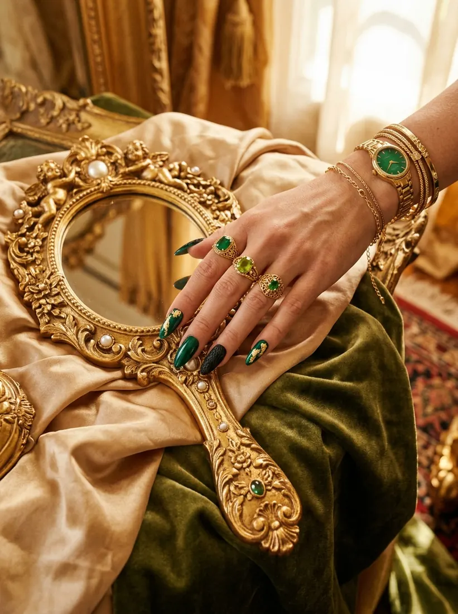
ONCARA
Nº 01 · OTOÑO 2026 · EDICIÓN SALVAJE
- Seis sets, seis energías
- El ritual para que te duren más
- Tu idea, en tus manos: así nace un personalizado
- El oráculo de tus uñas
Lo salvaje
también es femenino
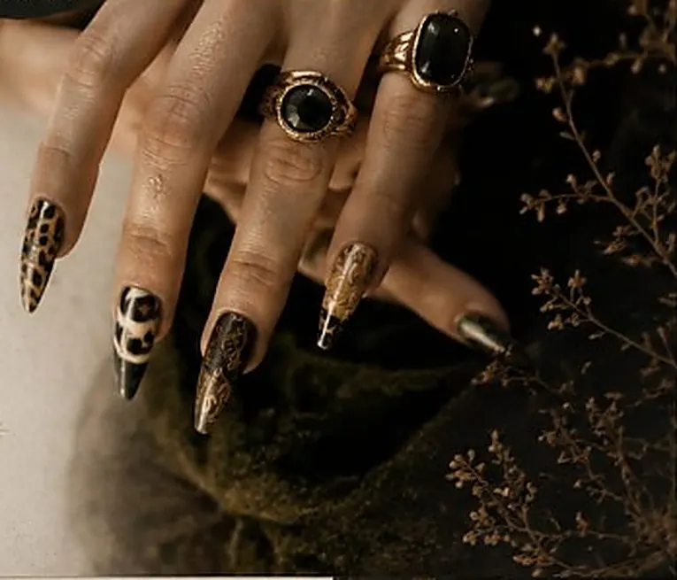
EDITO
· ONCARA MAG
CARTA DE ONCARA
Bienvenida al primer número de Oncara Mag. Esta revista nació de la misma pregunta que nos hizo empezar: ¿por qué conformarse con lo que se repite?
Acá no vas a encontrar tendencias para seguir. Vas a encontrar ideas para romperlas.
Juntamos en estas páginas todo lo que nos importa: los seis sets de la colección, el ritual para que te duren más, cómo nace un diseño personalizado y un par de secretos que guardábamos para vos.
Leela despacio. Guardala. Volvé cuando necesites recordar que tus manos también hablan.
Con amor salvaje,
Oncara
· Nº 01
Nº 01 · EDICIÓN SALVAJE
EN ESTE
NÚMERO
· ONCARA MAG
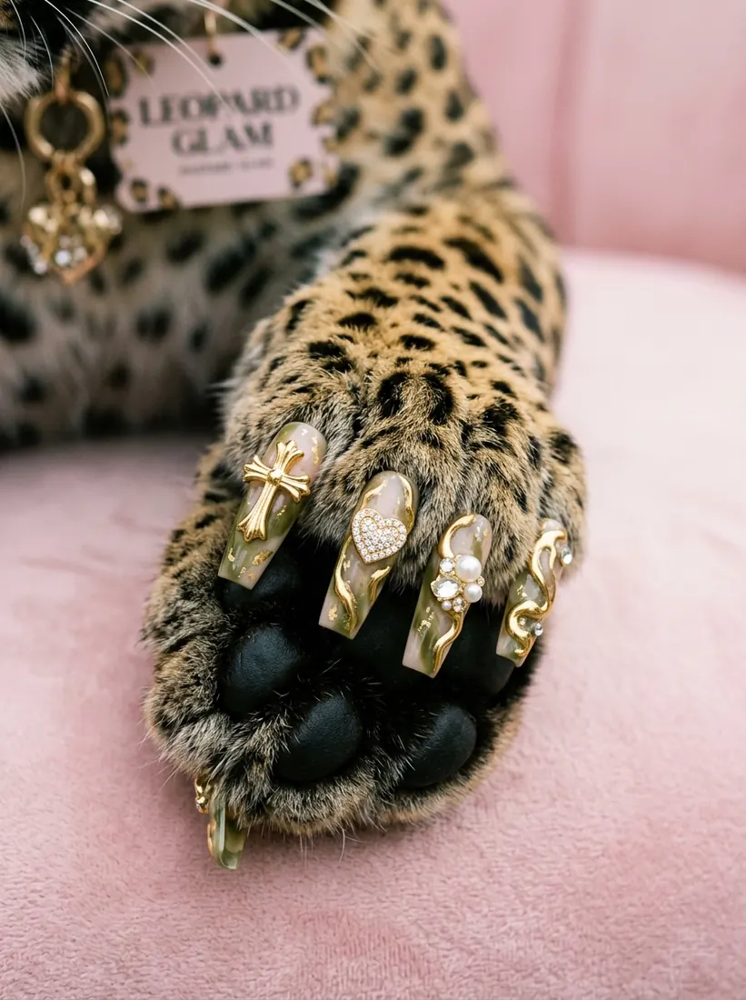
Leopard glam: uñas con relieve, cruces y perlas.
· Nº 01
SALVAJE.SENSUAL.ELEGANTE.
MANIFIESTO
Oncara nació para las almas que no piden permiso. Para las que eligen lo extraordinario, lo audaz y lo que las hace sentir únicas sin necesidad de explicación.
· ONCARA MAG
· Nº 01
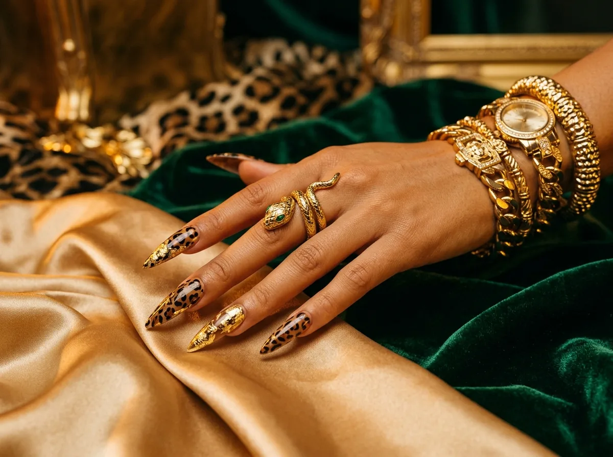
Set Salvaje con dorado en todas sus formas.
· ONCARA MAG
HISTORIA DE TAPA
SALVAJE
El set que mejor resume a Oncara.
Patrón jaguar icónico sobre base dorada y nude cálido, con detalles satinados y acabado de alta resistencia. Un animal que no pide permiso, convertido en joya para tus manos.
Cómo llevarlo: con dorado en todas sus formas. Anillos gruesos, cadenas, un reloj vintage. Y una actitud que no se explica.
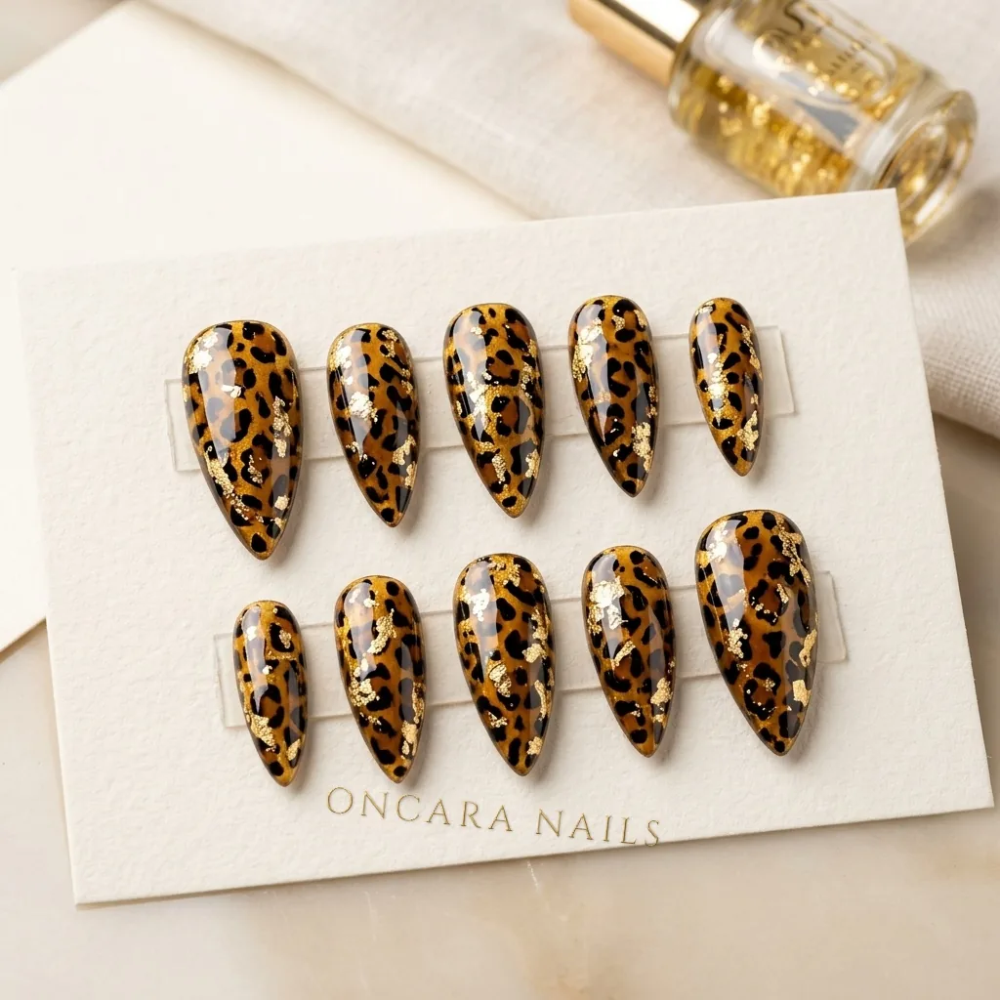
· Nº 01
LA COLECCIÓN
SEIS SETS,
SEIS ENERGÍAS
-
SALVAJE
Jaguar sobre dorado y nude cálido.
$32.000
-
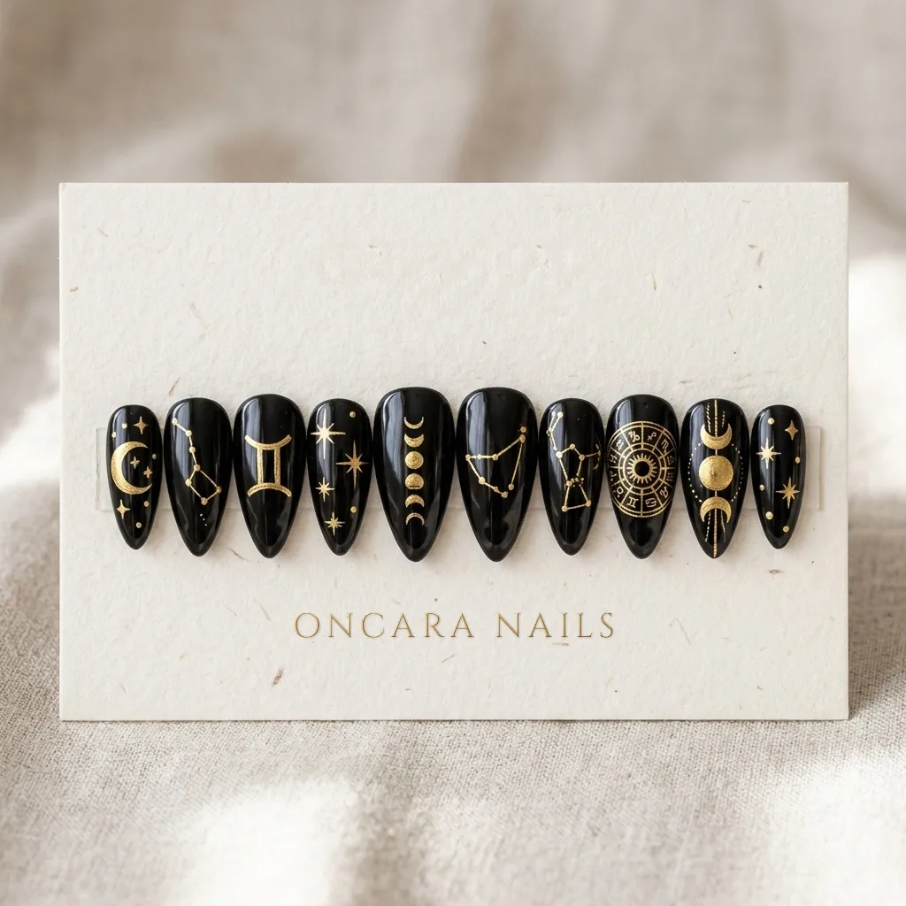
ORÁCULO
Constelaciones de oro fundido sobre oliva y noche.
$34.000
-
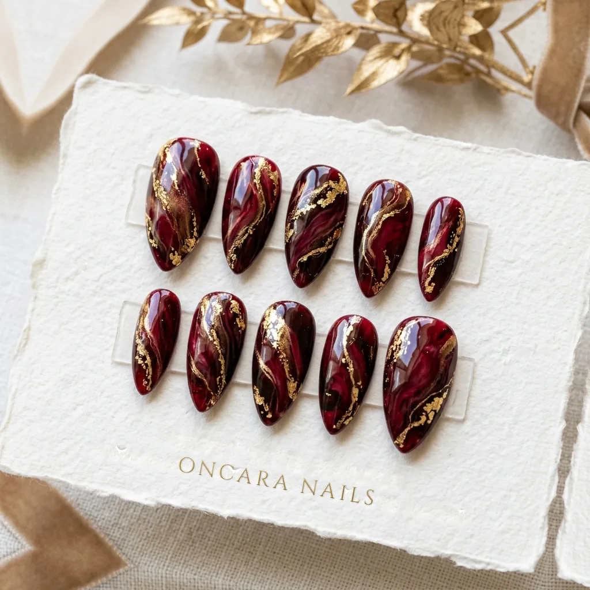
OCASO
Mármol bordó, velos traslúcidos y destellos dorados.
$31.000
· ONCARA MAG
“Cada set es una pieza única, hecha para que te sientas inigualable.”
-
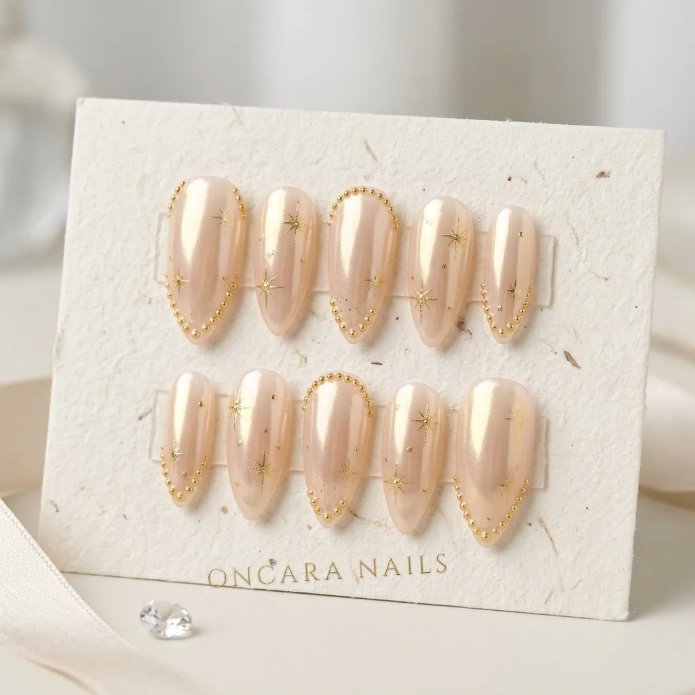
HECHIZO
Flores en relieve 3D sobre base perlada.
$33.000
-
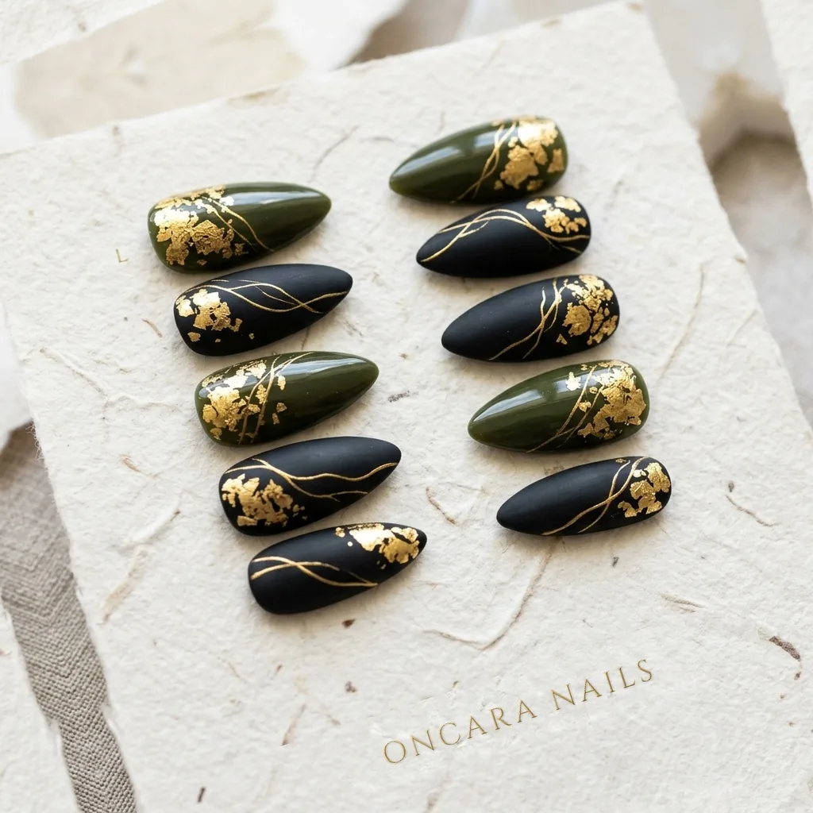
SELVA NEGRA
Verde bosque y noche con pan de oro.
$35.000
-
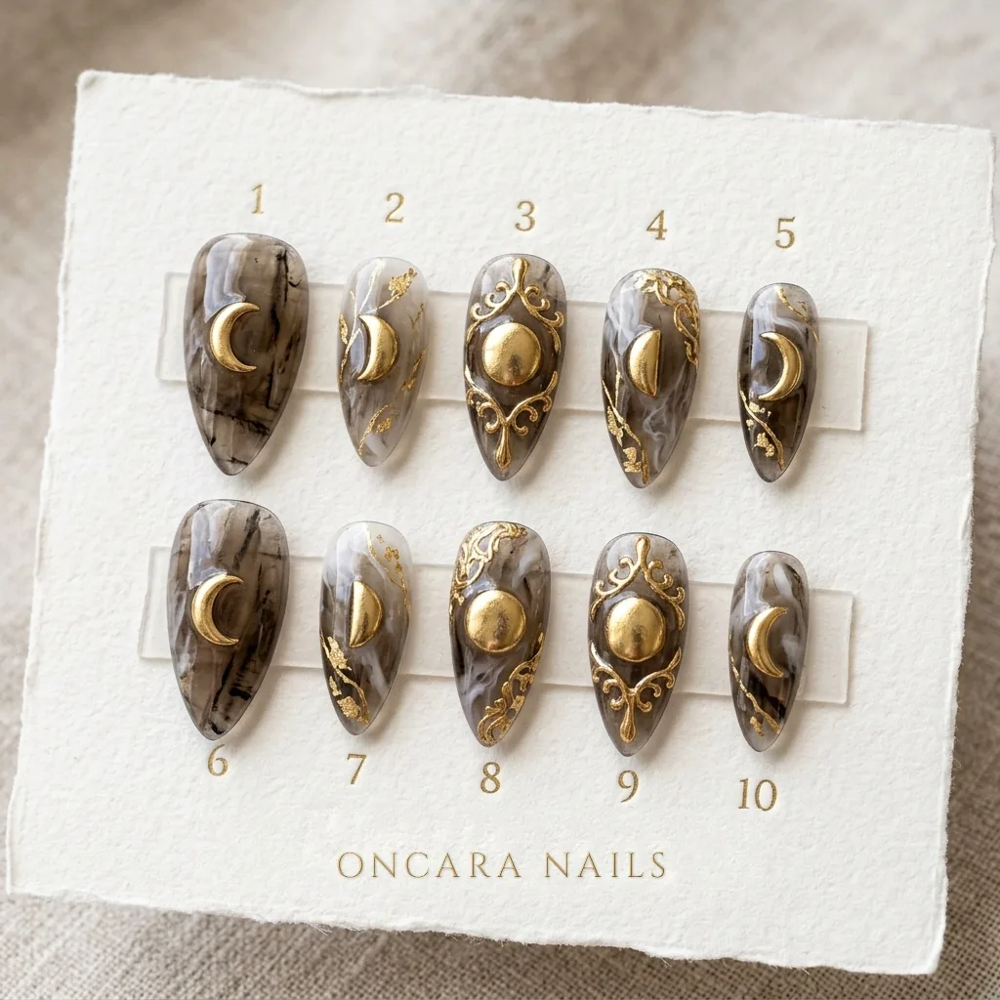
ALQUIMIA
Oro fundido y líneas geométricas sobre mármol ahumado.
$36.000
· Nº 01
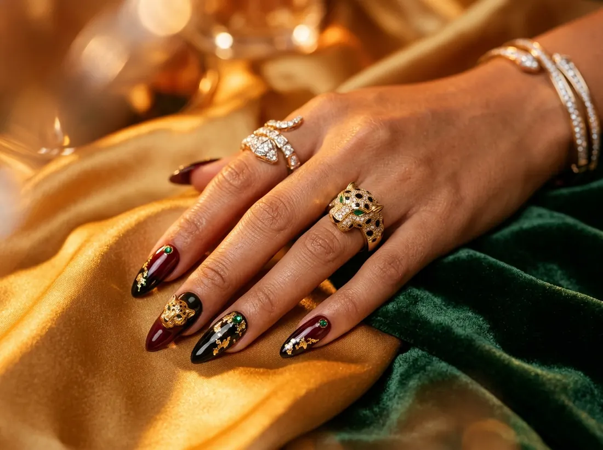
Uñas que hablan fuerte, joyas que acompañan.
· ONCARA MAG
JOYAS + UÑAS
GUÍA DE
ESTILO
- SALVAJE
- Oro amarillo y grueso. Que el jaguar sea el protagonista y el resto lo acompañe.
- ORÁCULO
- Esmeraldas, verdes y anillos finos apilados. Misterio de noche estrellada.
- OCASO
- Para la noche: bordó, terciopelo y un solo anillo statement.
- HECHIZO
- Perlas y brillo suave. Ideal para eventos de día, civiles y novias.
Regla de oro: si las uñas hablan fuerte, las joyas acompañan. Si querés ir al máximo, que todo sea dorado.
· Nº 01
· ONCARA MAG
Lo salvaje también es femenino.
Lo audaz también es elegante.
· Nº 01
CUIDADOS · I
EL RITUAL
Amalas. Protegelas. Volvelas a usar.
ANTES DE COLOCARLAS
- Lavá y secá muy bien tus manos.
- Retirá suavemente el exceso de cutícula.
- Limá apenas la superficie de la uña natural.
- Limpiala con alcohol para sacar grasa y humedad.
- Nada de crema ni aceite antes.
- Elegí bien el tamaño de cada tip.
DURANTE EL USO
- No las uses como herramientas: nada de abrir envases ni raspar.
- Usá guantes para tareas domésticas largas.
- Evitá mucha agua en las primeras horas.
- Si una se levanta, no tires: retirala bien.
· ONCARA MAG
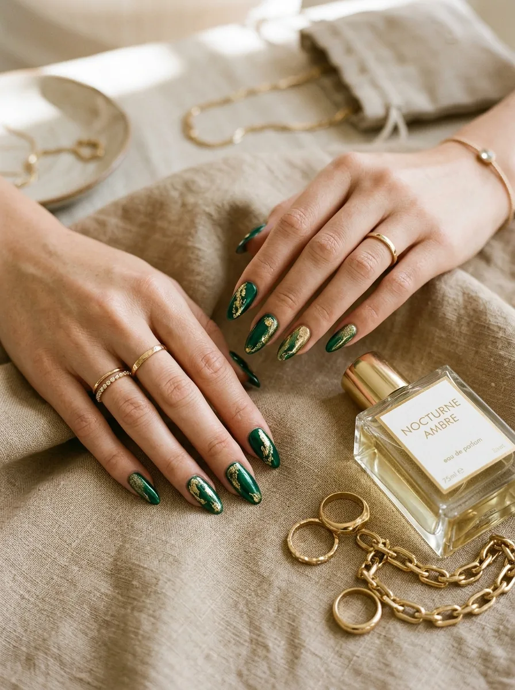
LA FÓRMULA
MENOS AGUA
+ MENOS GOLPES
+ BUENA PREPARACIÓN
= MAYOR DURACIÓN
· Nº 01
CUIDADOS · II
CÓMO
RETIRARLAS
- Remojá las uñas en agua tibia.
- Usá el producto de remoción correspondiente.
- Esperá a que el adhesivo se ablande.
- Levantá suavemente desde los laterales.
- Si ofrece resistencia, no la fuerces: seguí ablandando.
- Limpiá con cuidado los restos de adhesivo.
- Guardá tus Oncara para volver a usarlas.
· ONCARA MAG
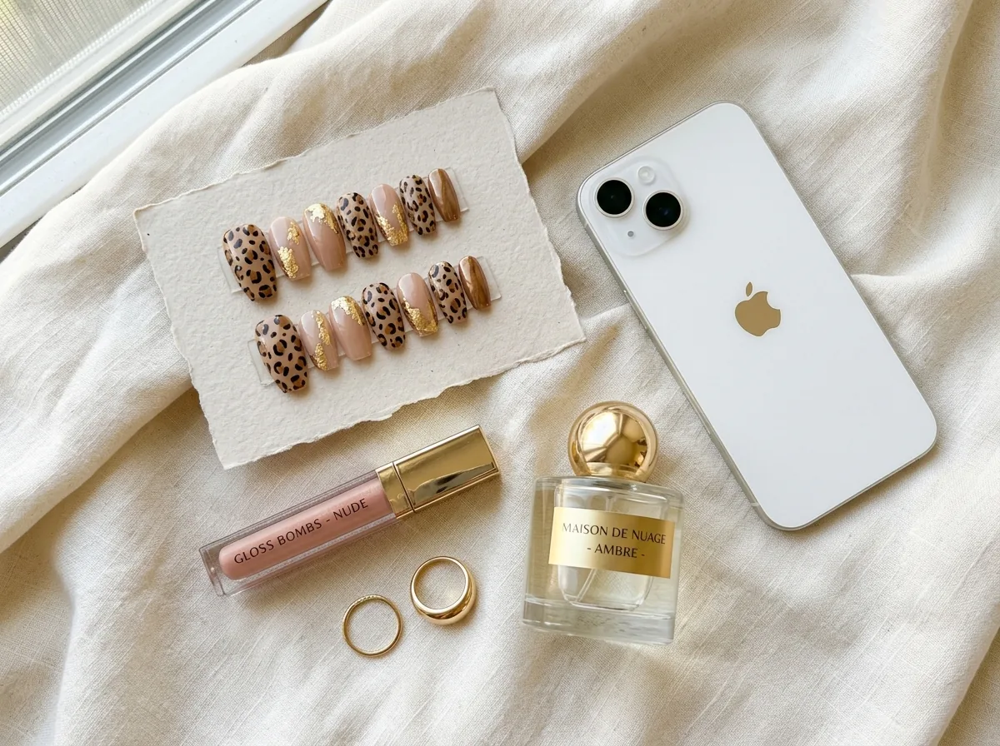
¿QUERÉS QUE DUREN MENOS?
No hace falta dañarlas ni arrancarlas: hacé el proceso de remoción antes y con cuidado. La duración también puede variar según el método de aplicación, tus actividades y el crecimiento natural de tus uñas.
LEER LA GUÍA COMPLETA ⟶· Nº 01
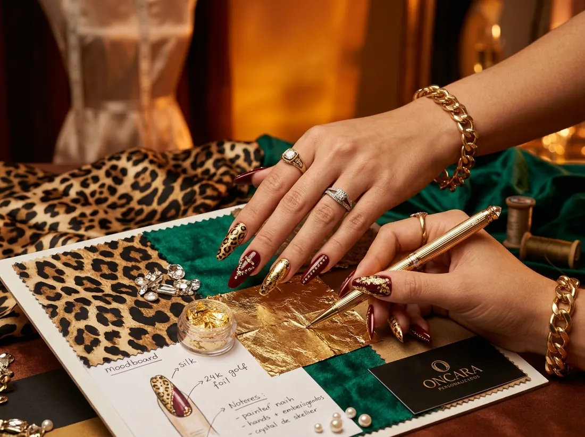
TU
IDEA
· ONCARA MAG
TU IDEA. TUS MANOS. TU DISEÑO.
PERSONALIZADOS
Contanos tu idea, envianos tus referencias y creamos para vos un set tan salvaje y auténtico como vos.
- 01
Inspiración. Mandanos una o varias imágenes de referencia.
- 02
Tu idea. Qué conservar, qué colores, qué detalles sumar.
- 03
Medidas. Elegí tu talle o envianos tus medidas.
- 04
Largo. De extra corto a extra largo.
- 05
Envío. Completá el formulario y listo.
Después revisamos tu idea y te contactamos para confirmar diseño, precio y tiempo de elaboración.
· Nº 01
MEDIDAS
TU TALLE
Cada mano es única.
| TALLE | PULGAR | ÍNDICE | MEDIO | ANULAR | MEÑIQUE |
|---|---|---|---|---|---|
| XS | 14 | 10 | 11 | 10 | 7 |
| S | 15 | 11 | 12 | 11 | 8 |
| M | 16 | 12 | 13 | 12 | 9 |
| L | 17 | 13 | 14 | 13 | 10 |
Las medidas son aproximadas. Si estás entre dos talles, elegí el más grande.
LARGOS
- EXTRA CORTO
- CORTO
- MEDIO
- LARGO
- EXTRA LARGO
· ONCARA MAG
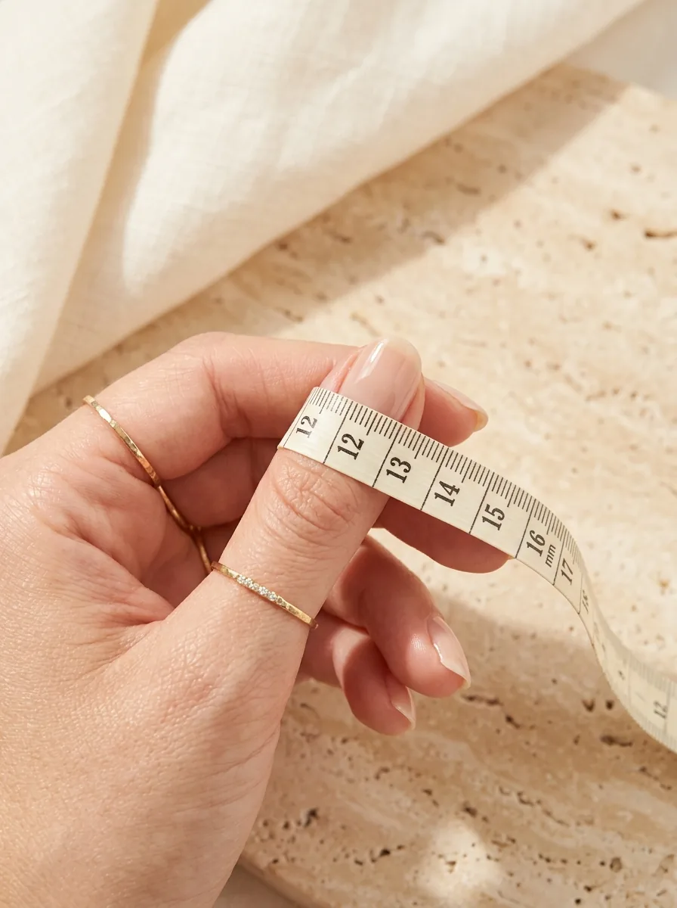
¿No sabés tu talle? Pedí medidas personalizadas y te guiamos paso a paso.
· Nº 01
HORÓSCOPO ONCARA
EL ORÁCULO
DE TUS UÑAS
Tu set según tu elemento. Poco rigor astrológico, mucha intuición.
- FUEGO Aries · Leo · Sagitario
- Salvaje. Para las que entran y el lugar cambia.
- TIERRA Tauro · Virgo · Capricornio
- Selva Negra. Raíces profundas y lujo que se toca.
- AIRE Géminis · Libra · Acuario
- Hechizo. Ligera, creativa, imposible de atrapar.
- AGUA Cáncer · Escorpio · Piscis
- Ocaso. Intensa, emocional, magnética.
· ONCARA MAG
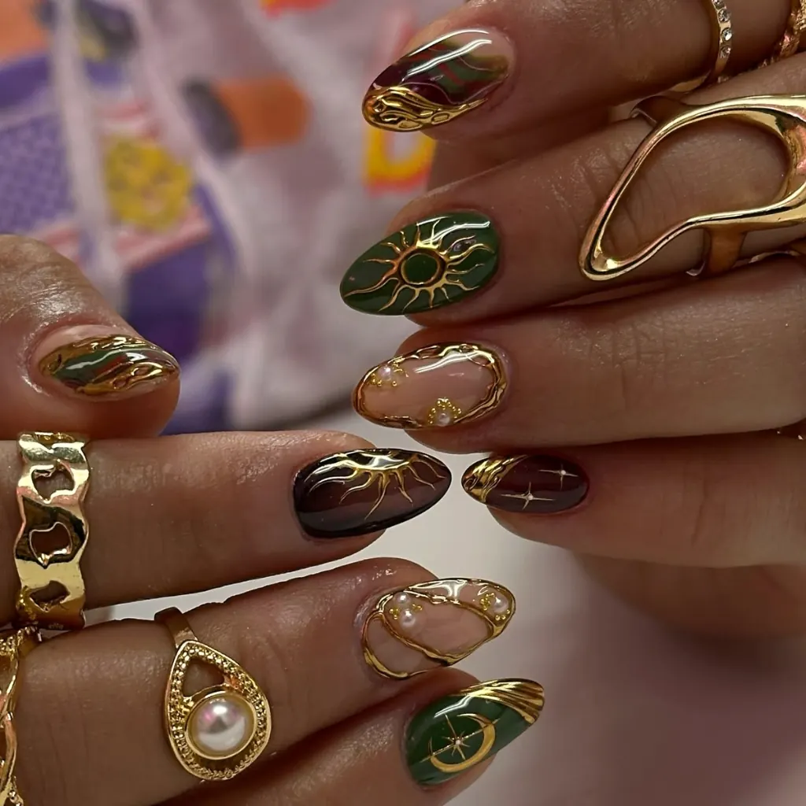
¿Y Oráculo y Alquimia?
Son para todos los signos: para las que leen las estrellas y para las que las inventan.
· Nº 01
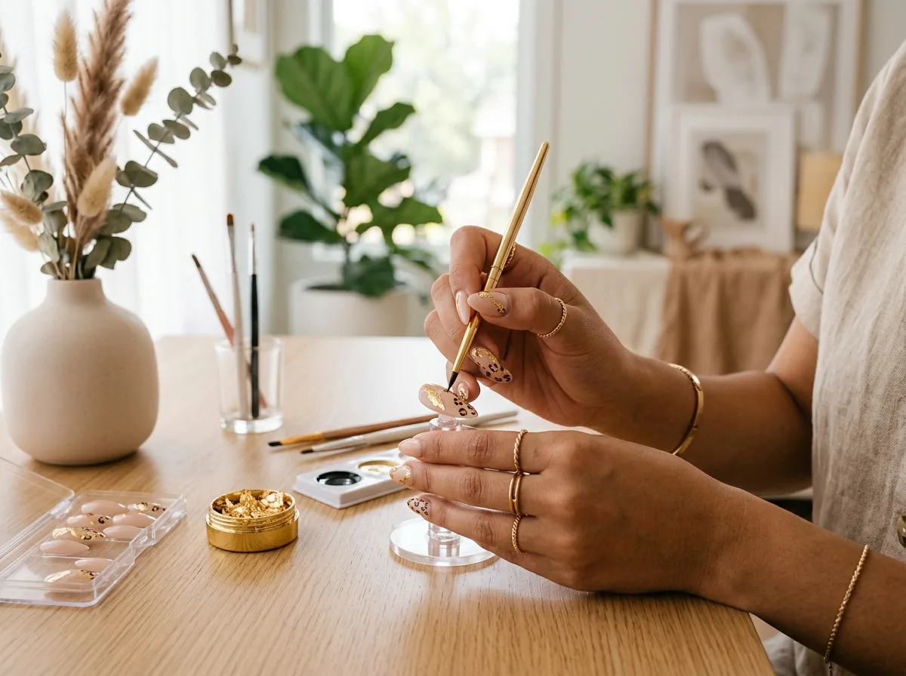
HECHAS
A MANO
· ONCARA MAG
UNBOXING
QUÉ HAY EN
LA CAJA
- 10 tips artesanales hechos a medida con tu talle exacto.
- Kit de colocación completo: pegamento líquido profesional, láminas de gel adhesivas reutilizables, lima pulidora y palito de naranjo.
- Caja joyero Oncara con grabado dorado para guardar tus joyas de por vida.
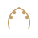
Hechas a mano- Materiales premium
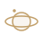
Reutilizables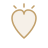
Para almas salvajes
· Nº 01
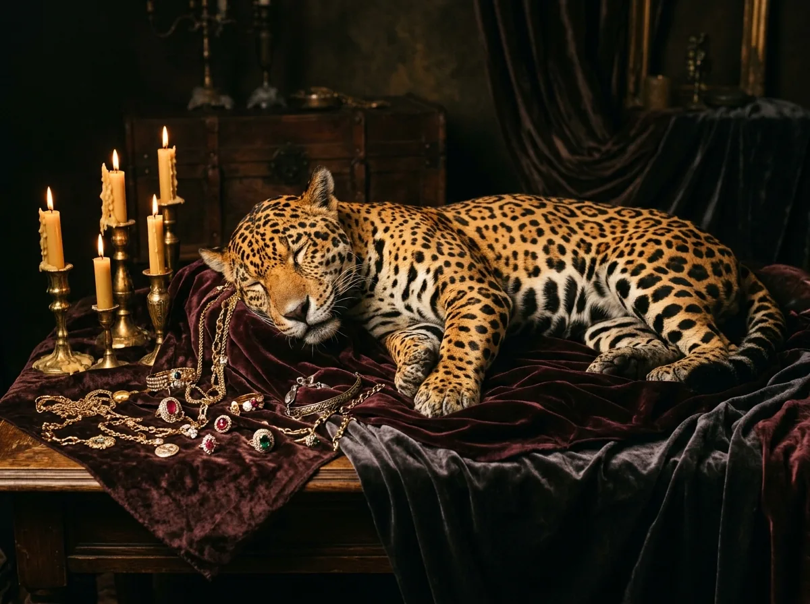
· ONCARA MAG
“No quiero ser como todas. Quiero ser salvaje.”
Oncara fue hecha para mujeres que eligen destacar. Que no temen ser vistas. Que convierten lo ordinario en extraordinario.
· Nº 01